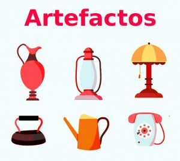

| COMPONENTE |
DESEMPEÑO |
| Naturaleza y evolución de la tecnología: | Analizo artefactos que corresponden a necesidades particulares en contextos sociales, economicos y culturales. |
Tecnología
Unidad 1 - Artefactos en contextos sociales, economicos y culturales
Artefactos
Los Artefactos son productos o dispositivos creados por el hombre para satisfacer necesidades o facilitar ciertas tareas empleando para su construcción y funcionamiento el uso de la ciencia, la técnica, la imaginación e ingenio. Los artefactos tienen diferentes tipos de caracteristicas, tamaños y niveles de complejidad. No es lo mismo un artefacto como un jarrón de barro, a un dispositivo electrónico complejo de alta tecnologia, aunque ambos pueden denominarse como "artefacto".

Algunos ejemplos de Artefactos tecnológicos son la rueda, el libro, licuadora, televisor, horno microondas, secador de cabello, guitarra eléctrica, cámara fotográfica, control remoto, videocámara, computadora, teléfono móvil, memoria de almacenamiento secundario, GPS, reloj inteligente (Smartwatch), lector de libros electrónicos, reproductores musicales, armas de fuego, linternas y lámparas portátiles.
Tipos de Artefactos
Veamos cuáles son los tipos de tecnologia en artefactos y ejemplos mås populares de nuestro mundo para que el concepto quede mås claro. Esta lista incluye artefactos y objetos tecnológicos de diferentes åmbitos de la Vida humana, y son atemporales al mundo moderno, es decir que incluyen creaciones de objetos / artefactos de tiempos pasados.
Artefactos de iluminaciön
En la decoraciön del hogar existen diversas empresas que explotan los artefactos de iluminaciön, que se suelen usar en conjunciön con objetos y artefactos de pared, algunos ejemplos:
- Luces para camas y mesas de luz.
- Iluminaciön puntual focal.
- Aparatos colgantes.
- Lämparas de pared.
- Luces LED dicroicas.
- Rieles, sistemas de tira o plafones.
Artefactos tecnolögicos
Dentro del mundo de la tecnologia también encontramos diversos de artefactos de innovaci6n como:
- Computadoras.
- Televisores.
- Celulares.
Artefactos militares
En el åmbito militar existen artefactos que también se usan comunmente, entre ellos: • • • • Explositos plåsticos. Tanques. Misiles. Bombas.
Fuente: https://www.ejemplos.co/20-ejemplos-de-artefactos-tecnologicos/#ixzz6H9lEnC56
Actividad Docente
Presentación de imágenes correspondientes a diferentes artefactos tecnológicos a través de la historia.
Presentar el vídeo “la evolución de los objetos”.
Organizar una mesa redonda.
Actividad Estudiante
Elaborar un collage con recortes de revistas de artefactos tecnológicos que se utilizan en la casa.
Participar en la mesa redonda con aportes del video
Obra publicada con Licencia Creative Commons Reconocimiento Compartir igual 4.0